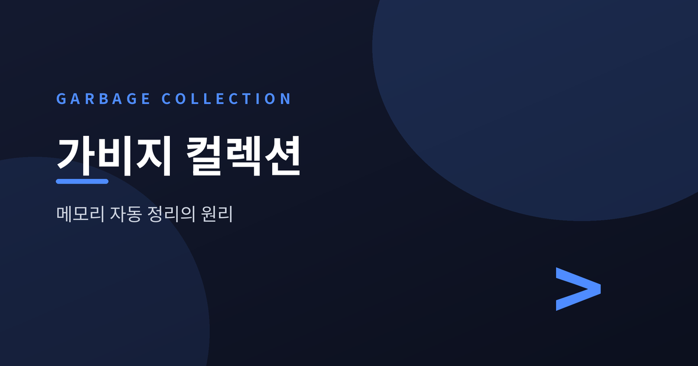
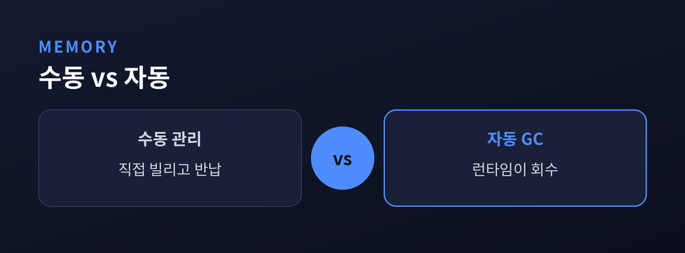
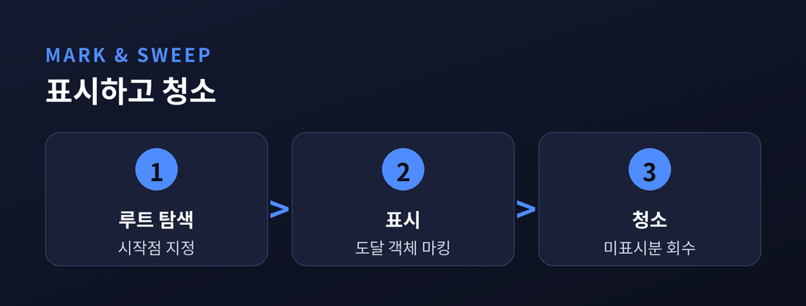
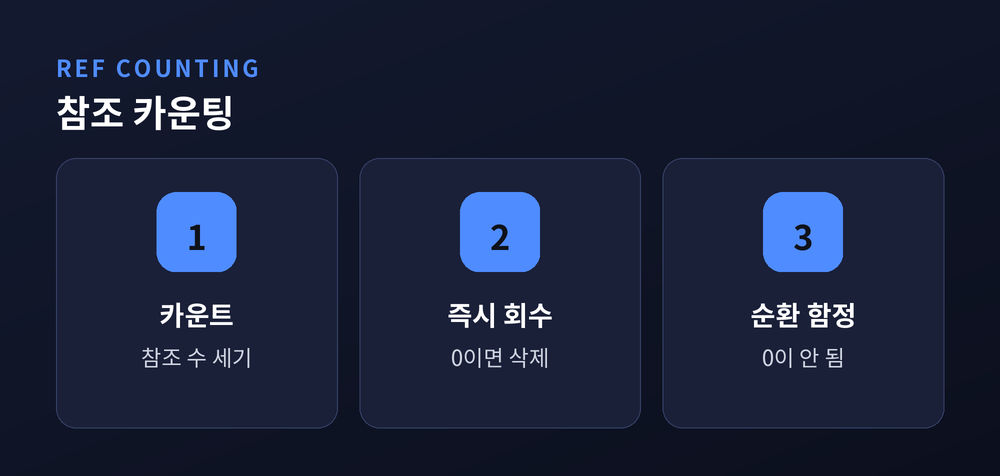
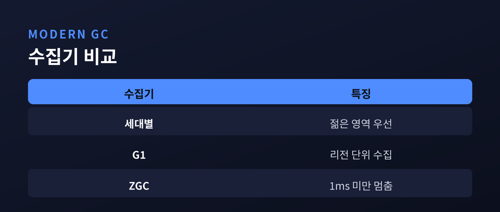

메모리가 자동으로 정리되는 원리
이번 글에서는 가비지 컬렉션(Garbage Collection)을 정리해 보겠습니다. 프로그램이 쓰다 버린 메모리를 누가, 어떻게 자동으로 회수하는지 살펴봅니다. 수동 관리부터 최신 저지연 방식까지 차례로 짚겠습니다.

메모리는 무한하지 않습니다. 프로그램은 필요할 때 메모리를 빌리고, 다 쓰면 돌려줘야 합니다.
예전엔 이 일을 사람이 직접 했습니다. C 언어의 `malloc`과 `free`가 대표적입니다. 개발자가 손수 빌리고 손수 반납했습니다.
문제는 실수였습니다. 반납을 잊으면 메모리 누수가 쌓입니다. 두 번 반납하면 프로그램이 깨집니다. 이미 반납한 자리를 다시 쓰면 엉뚱한 값이 나옵니다.
이런 버그는 눈에 잘 띄지 않습니다. 규모가 커질수록 추적도 어려워집니다.
가비지 컬렉션은 이 반납을 런타임이 대신합니다. 더 이상 쓰지 않는 객체를 자동으로 찾아 메모리를 회수합니다. 개발자의 실수가 줄고, 안정성이 올라갑니다.
물론 공짜는 아닙니다. 자동 회수는 더 많은 메모리와 약간의 CPU를 대가로 씁니다. 한 연구에 따르면 수동 관리와 대등한 성능을 내려면 몇 배의 메모리 여유가 필요하기도 합니다.

그렇다면 무엇이 쓰레기일까요. 기준은 '사용 여부'가 아니라 '도달 가능성'입니다.
프로그램에는 시작점이 있습니다. 전역 변수, 지역 변수, 레지스터 값. 이것을 루트 집합이라 부릅니다.
루트에서 참조를 따라가며 닿을 수 있는 객체는 살아있는 것입니다. 어디서도 닿지 않는 객체는 쓰레기입니다.
가장 고전적인 방법이 표시-청소(Mark & Sweep)입니다. 먼저 루트에서 도달하는 모든 객체에 표시를 남깁니다. 그다음 힙 전체를 훑어 표시되지 않은 것을 지웁니다.
다만 이 방식은 빈자리를 흩뿌립니다. 전체 여유는 넉넉해도 조각이 흩어져 큰 요청을 못 받기도 합니다. 그래서 살아있는 객체를 한쪽으로 밀어 붙이는 압축을 함께 쓰기도 합니다.

또 다른 방법은 참조 카운팅입니다. 객체마다 자신을 가리키는 참조의 수를 셉니다. 그 수가 0이 되는 순간 바로 회수합니다.
직관적이고 즉각적입니다. 쓰레기가 생기자마자 치웁니다. 별도의 멈춤 없이 조금씩 정리된다는 장점도 있습니다.
그런데 함정이 하나 있습니다. 순환 참조입니다.
두 객체가 서로를 가리킨다고 해봅시다. 바깥에서 아무도 쓰지 않아도, 서로가 서로를 가리키니 참조 수가 0이 되지 않습니다. 결국 회수되지 않고 남습니다.
그래서 참조 카운팅만 쓰는 언어는 드뭅니다. 파이썬은 참조 카운팅을 기본으로 하되, 순환을 잡기 위해 세대별 수집기를 함께 돌립니다. 두 방식의 약점을 서로 메우는 셈입니다.

오랜 관찰에서 나온 경험칙이 있습니다. "대부분의 객체는 금방 죽는다"는 것입니다.
세대별 GC는 이 가설을 활용합니다. 힙을 젊은 영역과 오래된 영역으로 나눕니다. 새 객체는 젊은 영역에서 태어납니다.
젊은 영역이 차면 그곳만 빠르게 청소합니다. 대부분이 이미 죽어 있으니 회수가 가볍습니다. 살아남은 소수만 오래된 영역으로 옮깁니다. 힙 전체를 매번 뒤지지 않아 부담이 확 줄어듭니다.
한 가지 남는 문제는 멈춤입니다. 회수하는 동안 프로그램을 잠시 세우는 것을 stop-the-world라 합니다. 힙이 커질수록 이 멈춤도 길어집니다.
그래서 최신 수집기가 등장했습니다. G1은 힙을 여러 조각으로 나눠 쓰레기가 많은 곳부터 겨냥합니다. ZGC는 대부분의 작업을 프로그램과 동시에 처리해, 힙 크기와 무관하게 1밀리초 미만의 멈춤을 지향합니다.
정리하면 이렇습니다. 가비지 컬렉션의 역사는 곧 "멈추지 않고 치우려는" 노력의 역사입니다.
완벽한 방식은 아직 없습니다. 저지연은 CPU를 더 쓰고, 자동화는 메모리를 더 씁니다. 결국 남는 것은 균형입니다.
"메모리를 잊어도 되는 자유는, 보이지 않는 청소부가 대신 짊어진 무게 위에 서 있습니다."

참고 소스